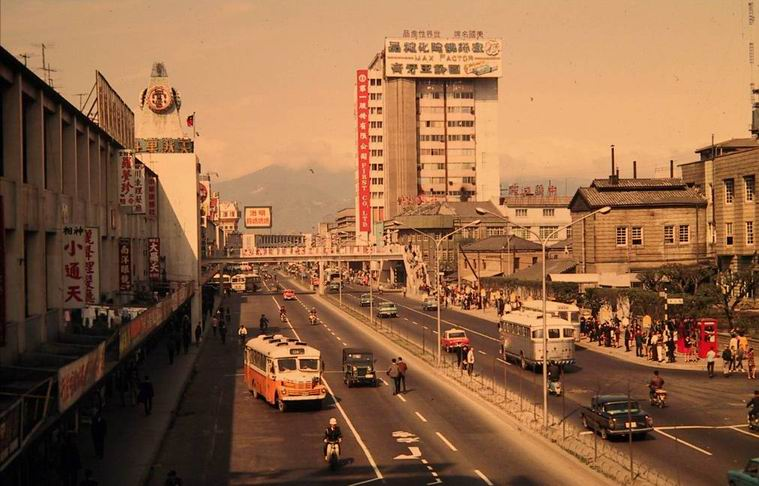
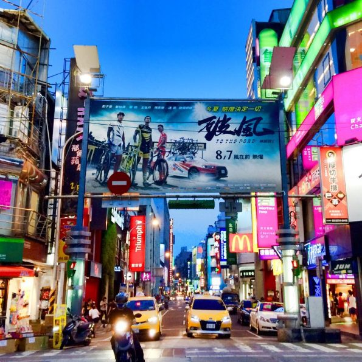

發展過程

從清代的荒蕪沼澤地成為日治時期的娛樂商業區，以「西門紅樓」為早期代表。在清代，台北城西門（寶成門）外的這塊區域，剛好夾在台北熱鬧的「三市街」（艋舺、大稻埕與台北城內）之間，這裡地勢低窪，還有墳墓散落其間，因此人煙稀少。日本人在這個區域進行大規模的填土事業，以及土地重劃與增設公共設施，把這裡開發為可用之地。其中一個地標性建築，是1908年落成的新起街市場，專門販賣各式蔬果肉類與日常用品，以及撫慰日本人鄉愁的日本貨，這棟美麗的紅磚建築如今依然存在，也就是捷運西門站1號出口附近的西門紅樓。
隨著地方行政制度的變化，1920年設立「台北市」，1922年廢除原有街庄名，改用日式町名，於是「西門町」這個地名正式出現。
電影街

1930年代開始，西門町成為台北著名的「電影街」；1945年日本投降後，榮景也繼續維持下去，1950年代起每家戲院門庭若市，黃牛票猖獗，電影院一家接著一家開，僅武昌街二段就連開了十多家戲院，其盛況自此可見一斑。1990年代起市中心漸向東發展，西門町逐漸沒落，青少年轉向臺北東區。2000年代初期，台北市政府與西門町當地商家，重新將西門町規劃為行人徒步區，並在週末和國定假日禁止車輛通行，才留下了青少年人潮。目前在西門町，幾乎每個周末都有小型演唱會、簽唱會、唱片首賣會登場，各種電影宣傳、街頭表演等等活動也常常可見。目前西門町還有20家以上的電影院，在台北要看首輪電影，西門町幾乎都找得著。而各種大小店家則有6000間左右。